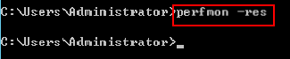
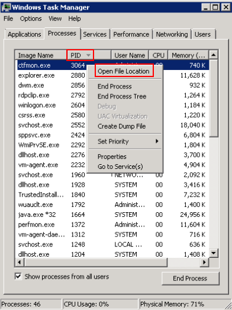

If your Windows ECS runs slowly or is inaccessible unexpectedly, the bandwidth or vCPU usage of the ECS may be excessively high. If you have created an alarm rule using Cloud Eye, the system automatically sends an alarm to you when the bandwidth or CPU usage reaches the threshold specified in the rule.
To handle this issue, perform the following operations:
- Fault locating
Identify the processes leading to high bandwidth or CPU usage.
Windows offer multiple tools to locate faults, including Task Manager, Performance Monitor, Resource Monitor, Process Explorer, Xperf (supported by versions later than Windows Server 2008), and full memory dump analysis.
- Troubleshooting
Fault Locating
- Log in to the ECS using VNC available on the management console.
- Start the Run dialog box, and then enter perfmon -res.Figure 1 Starting the Resource Monitor
 - On the Resource Monitor page, click the CPU or Network tab to view the CPU or bandwidth usage.Figure 2 Resource Monitor

- Obtain the IDs and names of the processes with high CPU or bandwidth usage.
- On the remote login page, click Ctrl+Alt+Del to start the Windows Task Manager.
Alternatively, start the Run dialog box and enter taskmgr to start the Windows Task Manager.
The following describes how to display PIDs in Windows Task Manager, locate a process, and check whether it is malicious.
- Click the Details tab.
- Click PID to sort the data.
- Right-click the process with high CPU or bandwidth usage and choose Open File Location from the shortcut menu.
- Check whether the process is malicious.Figure 3 Checking the process

Troubleshooting
Before the troubleshooting, check whether the process leading to the high CPU or bandwidth usage is malicious, and then take measures accordingly.
Suggestions for non-malicious processes
- If your ECS runs Windows Server 2008 or 2012, ensure that the available memory is 2 GB or larger.
- Check whether Windows Update is running on the backend.
- Check whether the antivirus software is running scan tasks on the backend.
- Check whether any applications requiring high CPU or bandwidth are running on the ECS. If so, modify ECS specifications or enlarge bandwidth.
- If the ECS configuration meets the application requirements, deploy applications separately. For example, deploy the database and applications separately.
Suggestions for malicious processes
If the high CPU or bandwidth usage is caused by viruses or Trojan horses, manually stop the affected processes. You are advised to troubleshoot the issue as follows:
- Use the commercial-edition antivirus software or install Microsoft Safety Scanner to scan for viruses in security mode.
- Install the latest patches for Windows.
- Run MSconfig to disable all drivers that are not delivered with Microsoft and check whether the fault is rectified. For details, see How to perform a clean boot in Windows.